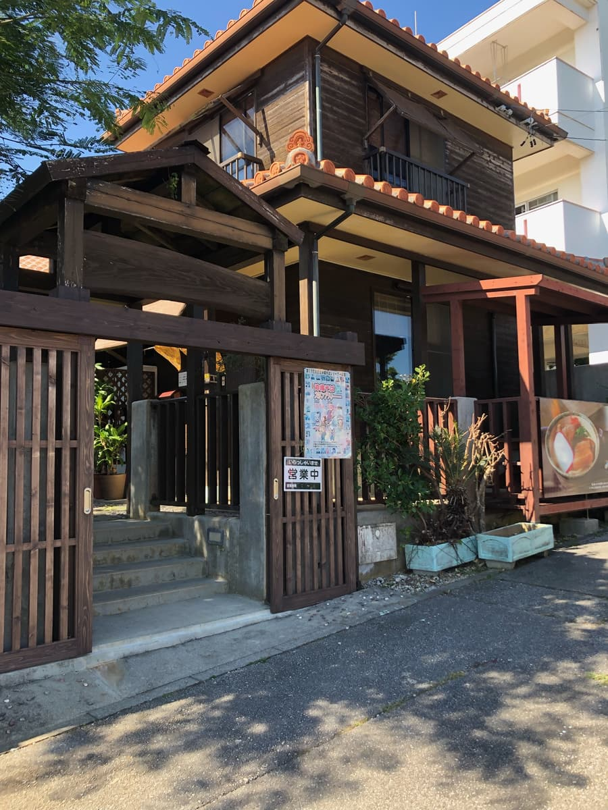
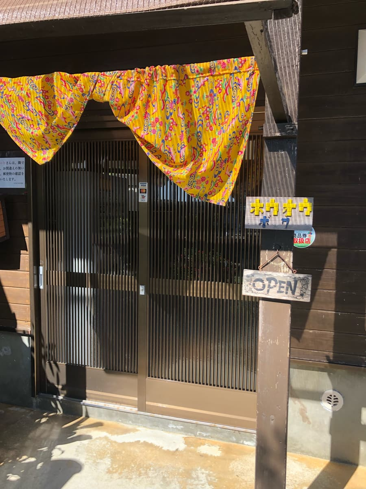
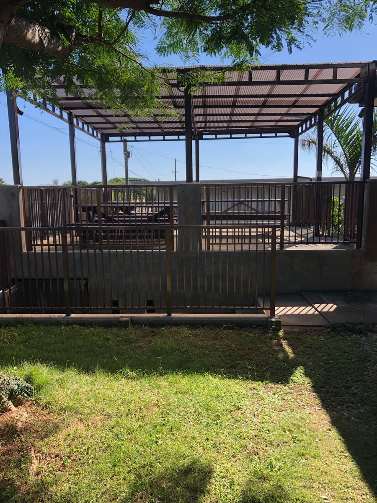
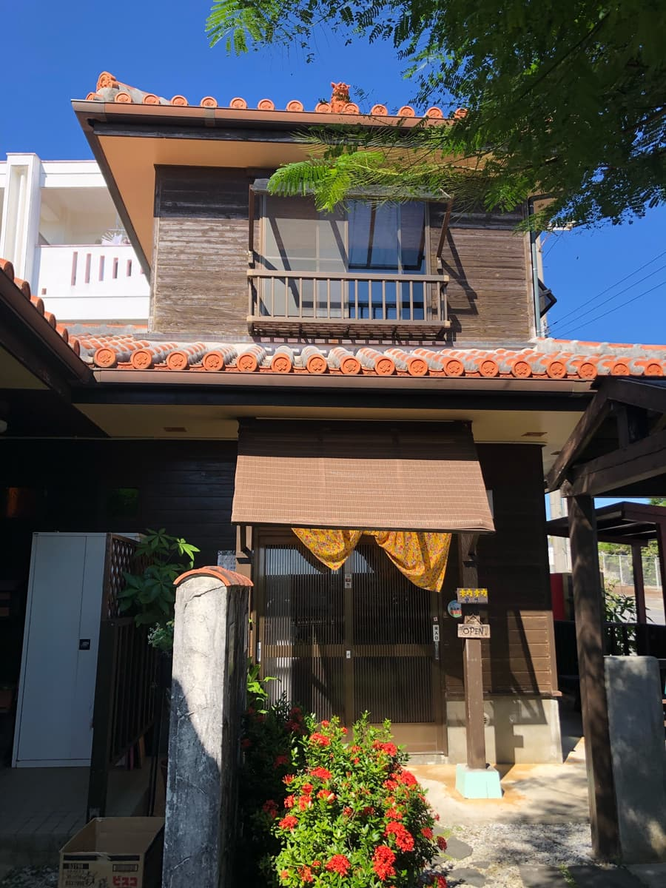
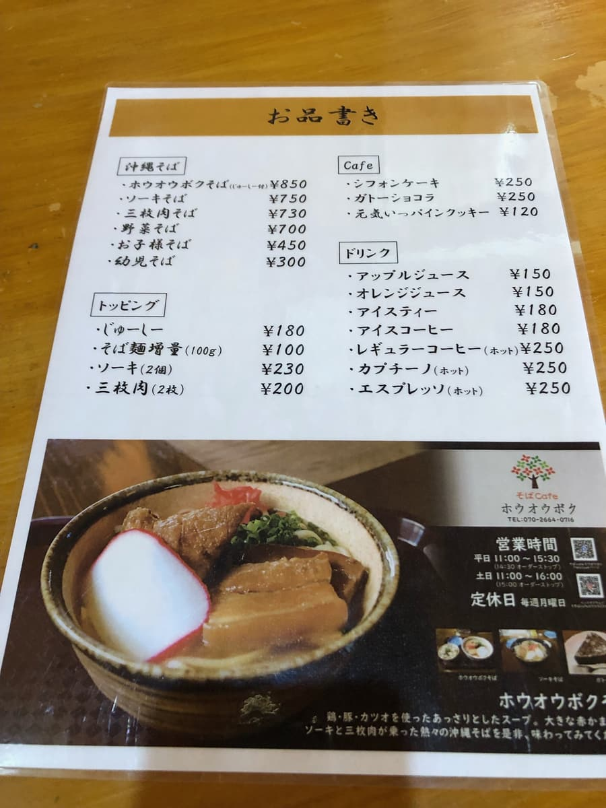
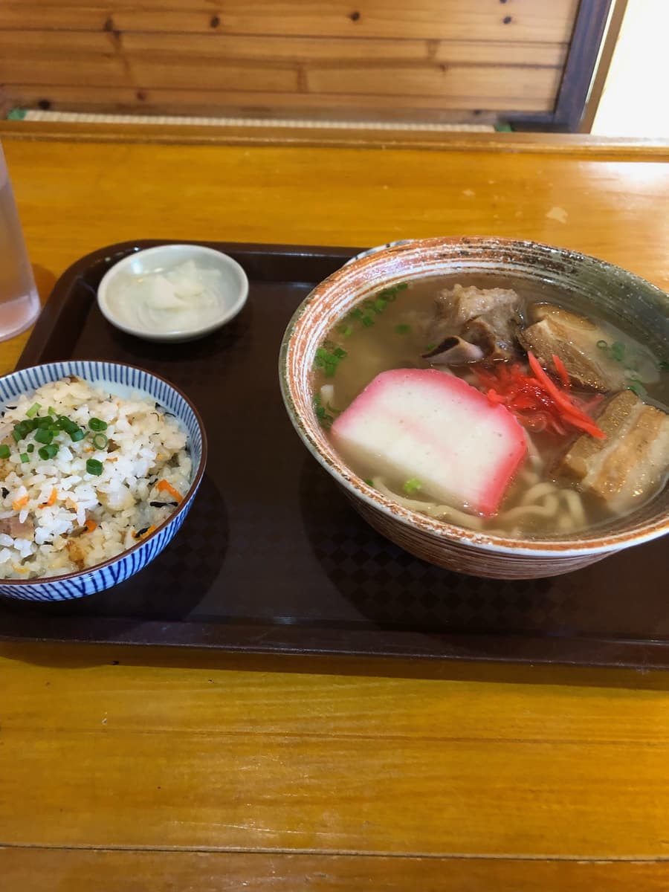
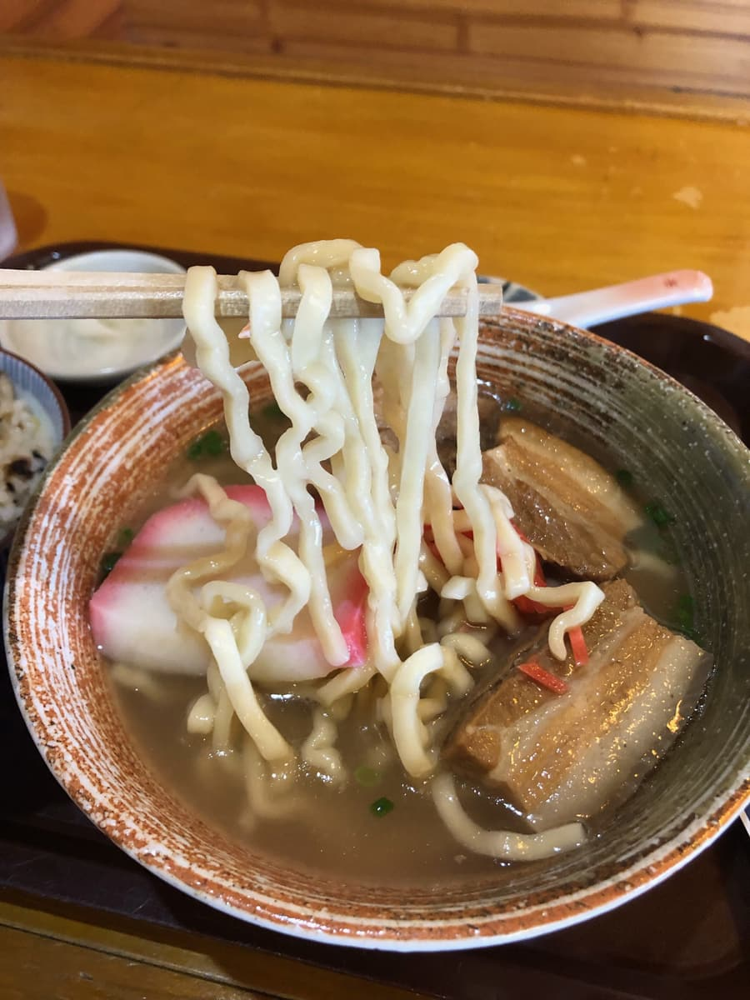

2023.11に食べました。こちらのお店は「第13回沖縄そばスタンプラリー（2023.10.1～2024.2.29）」の参加店で、20店舗目/34店舗として行きました😊




こちらのお店、宜野座村惣慶（ぎのざそんそけい）という所にありますが、かなりのどかな場所にあります🤗
私が行った時も、何か時間がとまったような雰囲気を感じました😊 人生、そんなに急がなくてもよんなーよんなー（ゆっくり、ゆっくり）で良いよという気持ちになりました笑
平日のお昼ですが、私が入ったときは誰もいませんでした。ゆったりな感じで良いですね笑 玄関入ると食券機があり、スタンプラリー冊子で紹介された「ホウオウボクそば」を注文。

玄関前の食券機を見て「現金オンリーか」と思って現金で食券機を購入し、店内のカウンターに提出しましたが、何とそこにはペイペイのQRコード読み取りバーコードが置かれている(;^ω^) キャッシュレスもあるなら、入り口で周知して欲しいですね(;^ω^) 恐らくスマホで支払い出来たと思いますが既に現金で食券購入したのでノークレームでホウオウボクそばの券を提出(;^ω^)

しばらくして注文した「ホウオウボクそば」来ました😊 ジューシー付きはサービス良いですね😊 まずはスープを味わいます(笑)
メニュー表にあるように鶏、豚、カツオを使った出汁スープはやや豚骨が効いている感じのスープですね。

次に麺を頂きます。太麺ちぢれ麺で柔らかい感じの麺ですね、ジューシーも付いているので、ボリュームは満点です。カマボコは他店にない具材で、沖縄のお祝い的な感じですね🤗
評価（9点/15点）：立地がかなり時間が止まったようなまったりとした雰囲気で食べれる沖縄そば屋です😊 そのような雰囲気でまったりと沖縄そばを食べたい方にお勧めです。一度は如何でしょうか？
麺 ：★★★☆☆（3）
スープ：★★★☆☆（3）
具 ：★★★☆☆（3）